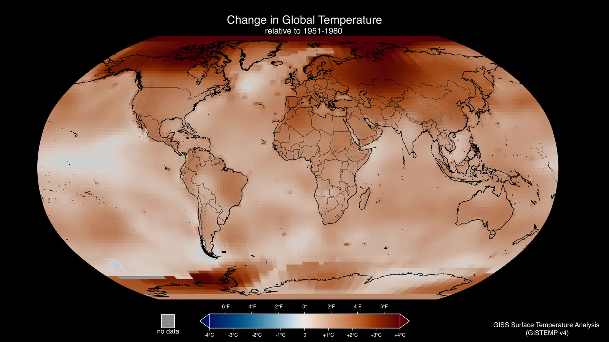
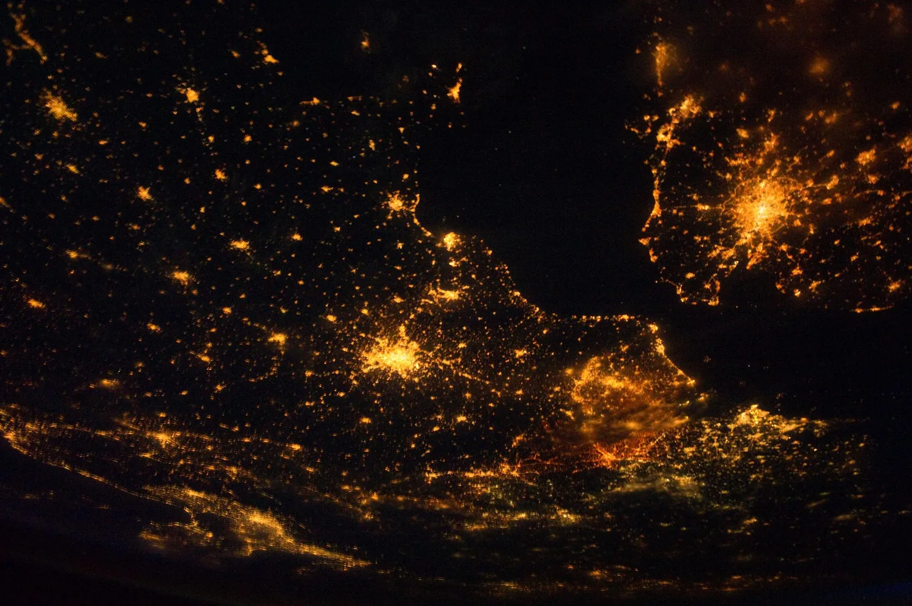

Energiantuotanto, ympäristö ja ilmastonmuutos
Miksi sähkön tuotantotavan valinta ratkaisee, kuinka paljon hiilidioksidia ilmakehään päätyy, vaikka kodin pistorasiasta tulee aina samanlaista sähköä?
Pohjatiedot
- Polttoaineen palaessa kemiallinen energia vapautuu, ja energia mitataan jouleina ja kilowattitunteinaluku Polttoaineet ja lämpöarvo $E = Hm$
- Energiantuotantotavat eroavat toisistaan teholtaan, saatavuudeltaan ja ympäristövaikutuksiltaanluku Energiantuotantotavat ja niiden vertailu
Ydinpolku: tee vaiheet järjestyksessä. Ydinpolulla ei vain lasketa. Siinä myös tutkitaan, selitetään ja piirretään kuvaajia. Valinnainen-tehtävät ovat lisäharjoittelua. Valinnaisia tehtäviä on 4.
Luvun tärkeät käsitteet Vapaaehtoinen
Tutustu luvun tärkeisiin käsitteisiin. Voit kirjoittaa niiden merkitykset sinulle vahvimmalla kielellä tai useammalla kielellä.
- Kasvihuoneilmiö
- Ilmakehän kaasut hidastavat lämpösäteilyn pääsyä avaruuteen. Siksi maanpinta pysyy lämpimämpänä kuin ilman niitä.
- Ilmastonmuutos
- Maapallon keskilämpötilan pitkäaikainen nousu, kun ihminen lisää ilmakehään kasvihuonekaasuja.
- Päästökerroin
- Kertoo, kuinka paljon kasvihuonekaasuja (laskettuna hiilidioksidiksi) syntyy yhtä energiayksikköä kohti.
- Kestävä energiatalous
- Energiaa tuotetaan ja käytetään niin, että tulevilla sukupolvilla on yhtä hyvät mahdollisuudet kuin meillä.
Pohdinta
Ennen teollistumista ilmakehässä oli hiilidioksidia noin $280\,\text{ppm}$. Se tarkoittaa $280$ molekyyliä miljoonaa ilmakehän molekyyliä kohti. Vuonna 2024 pitoisuus oli maailmanlaajuisesti keskimäärin noin $424\,\text{ppm}$ (WMO:n kasvihuonekaasutiedote 2025). Nousun syynä on suurelta osin se, että fossiilisia polttoaineita poltetaan sähkön, lämmön ja liikenteen tarpeisiin. Hiilidioksidia on silti alle puoli promillea ilmakehästä.
Miten näin pieni osa ilmakehästä voi muuttaa koko maapallon lämpötilaa? Miksi sillä on väliä, millä tavalla sähkö tuotetaan?
Valinnainen Kertaa: polttoaineen palaminen
Ennusta
Tee ennusteet ennen tutkimista 2 kysymystä
Ennuste 1: ilmakehä ilman kasvihuonekaasuja
Ennuste 2: suurimmat ja pienimmät päästöt
Tutki
Simulaatio
Käyttöohje
Valitse valikosta kasvihuonekaasujen määrä. Keltaiset lyhyet aallot ovat auringon säteilyä. Punaiset pitkät aallot ovat maanpinnan lämpösäteilyä. Kun kasvihuonekaasumolekyyli imee lämpösäteilyä, se hehkuu ja lähettää säteilyn eteenpäin satunnaiseen suuntaan, ylös tai alas. Lämpömittari näyttää maanpinnan keskilämpötilan. Lukemissa on arvo, johon lämpötila asettuu. Selitteessä ovat ilmakehän molekyylit. Typpi $\text{N}_2$ ja happi $\text{O}_2$ eivät juuri ime lämpösäteilyä. Hiilidioksidi $\text{CO}_2$, vesihöyry $\text{H}_2\text{O}$ ja metaani $\text{CH}_4$ imevät. Nopeus muuttaa kuvan ja lämpenemisen tahtia.
Mallin oletukset
Simulaatio on havainnollistus, ei laskumalli. Se ei laske lämpötilaa. Lämpötilat ovat pyöristettyjä lähdearvoja: ilman kasvihuonekaasuja noin $-18\,{}^\circ\text{C}$ (yksinkertaisen säteilytasapainomallin efektiivinen säteilylämpötila eli lämpötila, jonka malli antaa, kun Maa lähettää avaruuteen yhtä paljon energiaa kuin se saa Auringolta; ei tarkka ennuste), esiteollisella ajalla ($\text{CO}_2$-pitoisuus $280\,\text{ppm}$) noin $+14\,{}^\circ\text{C}$ ja nykyisin (simulaatiossa pyöristetty taso $420\,\text{ppm}$) mitattuna noin $+15\,{}^\circ\text{C}$. Vuosina 2011–2020 maapallo oli noin $1{,}1\,{}^\circ\text{C}$ lämpimämpi kuin 1850–1900 (IPCC AR6, 2021). Nykyinen lämpötila ei ole vielä asettunut. Samalla pitoisuudella maapallo lämpenee yhä. Ilmastoherkkyyden paras arvio (alla) antaa asettuneeksi lämpötilaksi noin $+16\,{}^\circ\text{C}$. Simulaatio alkaa nykyhetkestä, $+15\,{}^\circ\text{C}$:sta. Kun hiilidioksidia on kaksinkertaisesti esiteolliseen verrattuna ($560\,\text{ppm}$), lämpenemisen paras arvio on noin $3\,{}^\circ\text{C}$, todennäköisesti $2{,}5\text{–}4\,{}^\circ\text{C}$ (IPCC AR6). Se on noin $+17\,{}^\circ\text{C}$, kun lämpötila on ehtinyt asettua. Todellisuudessa asettuminen kestää vuosikymmeniä tai vuosisatoja. Säteilyn aallot eivät ole mittakaavassa. Todellinen ilmakehä imee suurimman osan maanpinnan lämpösäteilystä jo nykyisellä määrällä. Kuvassa tasojen eroa on korostettu. Kuvassa ei näy pilvien ja jään heijastamaa auringon säteilyä. Siinä ei näy myöskään vesihöyryn määrän muutosta lämpötilan mukana.
Laskennan selitys
Mitä lämpimämpi maanpinta on, sitä tiheämmin se lähettää kuvassa lämpösäteilyä. Lämpötila lähestyy valitun tason arvoa vähitellen. Normaalinopeudella ero puolittuu noin kahdessa sekunnissa. FY3-kurssilla käsitellään lämpösäteilyn kulkua. Siellä lämpötila myös lasketaan säteilystä. Se tehdään luvussa Lämmön siirtyminen, energiatasapaino ja ilmastonmuutos.
Valitse kasvihuonekaasujen määrä ja seuraa säteilyä ilmakehässä ja lämpömittaria.
Koe: kasvihuonekaasujen määrä
Testaa ennuste 1. Muuta kasvihuonekaasujen määrää ja kirjaa jokainen taso: ei kasvihuonekaasuja, esiteollinen, nykyinen ja kaksinkertainen hiilidioksidi. Tason $0\,\text{ppm}$ ilmakehästä on poistettu myös vesihöyry ja metaani. Odota jokaisella tasolla, kunnes lämpömittari on asettunut. Katso, mitä lämpösäteilylle tapahtuu ilmakehässä.
Alkutila: $\text{CO}_2$-pitoisuus: nykyinen määrä. Vakiona: ei mitään. Muutetaan: $\text{CO}_2$-pitoisuus.
| $\text{CO}_2$-pitoisuus | asettuva $T\ ({}^\circ\text{C})$ |
|---|
Lisää tutkittavaa 3 tehtävää
Aineisto: elinkaaren päästöt kilowattituntia kohti
IPCC:n viidennen arviointiraportin (AR5, 2014) työryhmän III liitteessä III on koottu satojen elinkaarilaskelmien tulokset. Alla ovat pyöristetyt mediaanit: grammoja hiilidioksidiekvivalenttia yhtä tuotettua kilowattituntia kohti.
| Tuotantotapa | $e\ (\text{g/kWh})$ |
|---|---|
| Kivihiili | 820 |
| Maakaasu | 490 |
| Biomassa | 230 |
| Aurinkosähkö | 41–48 |
| Vesivoima | 24 |
| Ydinvoima | 12 |
| Tuulivoima | 11–12 |
Luvut eivät ole yhden voimalan mittauksia. Ne ovat useiden tutkimusten mediaaneja. Siksi ne kuvaavat tyypillistä voimalaa.
Tuotetaan $1000\,\text{kWh}$ sähköä kivihiilellä. Kuinka monta kilogrammaa hiilidioksidiekvivalenttia syntyy elinkaaren aikana? Vastaa kilogrammoina.
Vihje 1: ohjaava kysymys
Taulukon luku kertoo grammat yhtä kilowattituntia kohti. Montako kilowattituntia tuotetaan?
Vihje 2: mikä yhteys
Päästö on $m = e \cdot E$, missä $e = 820\,\text{g/kWh}$ ja $E = 1000\,\text{kWh}$.
Vihje 3: välivaihe
Muunna lopuksi grammat kilogrammoiksi: $1\,\text{g} = 0{,}001\,\text{kg}$.
Näytä ratkaisu
Annettu
energia $E = 1000\,\text{kWh}$; taulukosta kivihiilen päästökerroin $e = 820\,\text{g/kWh}$
Kysytty
päästö $m$ kilogrammoina
Periaate
Päästö on suoraan verrannollinen tuotettuun energiaan. Päästökerroin kertoo päästön yhtä kilowattituntia kohti. Siksi päästö saadaan kertomalla energia päästökertoimella.
Kaava
$m = e \cdot E$
Muunnokset
Kilowattitunnit supistuvat, joten tulos tulee grammoina. Grammat muutetaan kilogrammoiksi: $1\,\text{g} = 0{,}001\,\text{kg}$.
Sijoitus
Vastaus
$820\,\text{kg} = 8{,}2 \cdot 10^{2}\,\text{kg}$
Tuloksessa on kaksi merkitsevää numeroa, kuten pyöristetyssä mediaanissa $820\,\text{g/kWh}$. Sen nolla on pyöristyksen nolla (samoin maakaasun $490\,\text{g/kWh}$).
Järkevyys
Pyöristetyillä luvuilla
Tämä on lähellä tulosta. Kivihiilellä yksi kilowattitunti tuottaa alle kilogramman päästön. Siksi tuhannesta kilowattitunnista syntyy alle $1000\,\text{kg}$.
Mistä tuulivoiman päästöt syntyvät?
Taulukossa tuulivoiman päästökerroin on $11\text{–}12\,\text{g/kWh}$. Tuulivoimala ei polta mitään.
Mitä päästökerroin ei kerro?
Ydinvoiman ja tuulivoiman päästökertoimet ovat taulukossa lähes yhtä pienet, noin $12\,\text{g/kWh}$. Silti molemmista keskustellaan vilkkaasti.
Teoria
Ydinajatus
Aurinko lämmittää maanpintaa. Se lähettää maanpinnalle energiaa säteilynä: näkyvänä valona ja lähi-infrapunasäteilynä. Ilmakehä päästää suurimman osan tästä säteilystä läpi. Lämmin maanpinta lähettää energiaa takaisin avaruuteen lämpösäteilynä. Ilmakehän kasvihuonekaasut imevät tämän lämpösäteilyn. Tärkeimmät kasvihuonekaasut ovat vesihöyry, hiilidioksidi $\text{CO}_2$ ja metaani $\text{CH}_4$. Ne säteilevät energian uudelleen joka suuntaan. Siksi osa energiasta palaa takaisin maanpinnalle.
Kasvihuonekaasut päästävät siis auringon säteilyn läpi, mutta hidastavat lämpösäteilyn pääsyä pois. Maanpinta pysyy lämpimämpänä kuin ilman niitä. Maan yksinkertainen säteilytasapainomalli olettaa, että Maa lähettää avaruuteen yhtä paljon energiaa kuin se saa Auringolta. Mallin antama lämpötila on Maan efektiivinen säteilylämpötila, noin $-18\,{}^\circ\text{C}$. Maanpinnan keskilämpötila on kuitenkin noin $+15\,{}^\circ\text{C}$. Ero näyttää, kuinka tärkeä kasvihuoneilmiö on. Luku $-18\,{}^\circ\text{C}$ ei ole tarkka ennuste pinnan lämpötilasta ilman kasvihuonekaasuja. Silloin muuttuisivat myös esimerkiksi pilvet ja jää. Luonnollinen kasvihuoneilmiö pitää maapallon asuttavana. Ilman sitä merien vesi olisi jäässä.
Ongelma on se, että ilmiö voimistuu. Ihminen lisää ilmakehään hiilidioksidia ja metaania. Silloin lämpösäteily pääsee pois entistä hitaammin ja maapallon keskilämpötila nousee. Tätä pitkäaikaista muutosta sanotaan ilmastonmuutokseksi. Hiilidioksidin pitoisuus ilmakehässä on kasvanut noin $280\,\text{ppm}$:stä (ennen teollistumista) noin $424\,\text{ppm}$:ään (maailmanlaajuinen keskiarvo vuonna 2024, WMO:n kasvihuonekaasutiedote 2025). Hiilidioksidia on silti alle puoli promillea ilmasta. Pieni osuus riittää, koska ilman pääkaasut typpi ja happi eivät juuri ime lämpösäteilyä. Siksi juuri harvat kasvihuonekaasumolekyylit ratkaisevat, kuinka helposti lämpösäteily pääsee pois.
FY3-kurssilla kasvihuoneilmiötä käsitellään myös laskuilla. Se tehdään luvussa Lämmön siirtyminen, energiatasapaino ja ilmastonmuutos. Tässä luvussa riittää ymmärtää kaksi asiaa: mitä kaasut tekevät säteilylle ja mistä lisäkaasut tulevat.

Polttoaineet yhdistävät energian ja ilmaston
Fossiilinen polttoaine on esimerkiksi kivihiili, öljy tai maakaasu. Se on muinaisten eliöiden kemiallista energiaa. Kivihiili on syntynyt enimmäkseen kasveista. Öljy ja maakaasu ovat syntyneet meren planktonista. Kun tällainen hiiltä sisältävä polttoaine palaa täydellisesti, sen hiili yhtyy hapen kanssa: $\text{C} + \text{O}_2 \rightarrow \text{CO}_2$. Kemiallinen energia vapautuu lämpönä (luku Polttoaineet ja lämpöarvo $E = Hm$). Hiilidioksidi poistuu savukaasujen mukana ilmakehään. Mitä enemmän energiaa otetaan polttamalla hiilipitoisia polttoaineita, sitä enemmän hiilidioksidia vapautuu. Kaikissa polttoaineissa ei ole hiiltä. Esimerkiksi vedyn palaessa syntyy vain vettä.
Fossiilisen polttoaineen hiili on ollut maan alla miljoonia vuosia. Siksi sen polttaminen lisää ilmakehän hiilidioksidia. Biomassan, esimerkiksi puun, hiili on sitoutunut eli varastoitunut kasveihin vasta vuosikymmenten aikana. Biomassan poltto ei silti ole päästötöntä. Polton hiilidioksidi on ilmakehässä, kunnes uusi kasvu sitoo sen takaisin. Siihen menee vuosikymmeniä, ja kasvien täytyy todella kasvaa uudelleen. Lisäksi viljely, korjuu ja kuljetus aiheuttavat omia päästöjä.

Tuotantotapoja verrataan elinkaaren päästöillä
Päästöjä syntyy muustakin kuin polttamisesta. Voimala on rakennettava teräksestä, betonista ja kuparista. Polttoaine on kaivettava tai kerättävä ja kuljetettava. Lopuksi voimala puretaan. Siksi tuotantotapoja verrataan elinkaaren päästöillä. Elinkaari on voimalan koko ikä rakentamisesta purkamiseen. Silloin kaikkien vaiheiden päästöt lasketaan yhteen. Summa jaetaan energialla, jonka voimala tuottaa koko elinkaarensa aikana.
Vertailua varten metaani ja muut kasvihuonekaasut muutetaan hiilidioksidiekvivalenteiksi ($\text{CO}_2$-ekv.). Se tarkoittaa sellaista hiilidioksidin määrää, jolla on sama lämmittävä vaikutus.
Päästöt eivät ole ainoa peruste
Ilmastovaikutuksen lisäksi tuotantotapoja punnitaan eli verrataan toisiinsa maankäytön, kuljetusten, jätteen ja turvallisuuden kannalta:
- Kivihiili ja maakaasu: suurimmat päästöt. Polttoaineet kaivetaan ja kuljetetaan laivoilla, junilla tai putkissa. Savukaasuissa on myös muita epäpuhtauksia.
- Biomassa: vie metsä- ja peltoalaa. Biomassa vie paljon tilaa, ja sen energiasisältö massaa kohti on pieni. Siksi sitä ei kannata kuljettaa kauas.
- Aurinko- ja tuulivoima: tarvitsevat paljon pinta-alaa tuotettua energiaa kohti. Tuulivoima vaikuttaa maisemaan ja linnustoon. Tuotanto riippuu säästä, joten tarvitaan säätövoimaa tai varastointia.
- Vesivoima: padot ja altaat muuttavat jokiympäristöä ja estävät kalojen kulun. Tuotantoa voi kuitenkin säätää.
- Ydinvoima: pinta-alaa kuluu vähän. Polttoainetta tarvitaan massana vähän, joten kuljetuksia on vähän. Käytetty polttoaine on radioaktiivista jätettä. Se on eristettävä pitkäksi aikaa. Onnettomuuden seuraukset voisivat olla vakavia, vaikka riski on pieni.
Kestävä energiatalous tarkoittaa, että energiaa tuotetaan ja käytetään järkevästi. Nykyiset tarpeet tyydytetään, mutta tulevilta sukupolvilta ei viedä mahdollisuuksia. Parasta voimalaa ei ole. Valinnassa punnitaan ilmastovaikutusta, maankäyttöä, jätettä, turvallisuutta ja hintaa. Punnitaan myös sitä, että sähköä on aina saatavilla (luku Energiantuotantotavat ja niiden vertailu).
Hiilidioksidipäästö
Päästö saadaan, kun käytetty tai tuotettu energia kerrotaan päästökertoimella:
$$m = e \cdot E$$
missä $m$ on päästö ($\text{g}$ tai $\text{kg}$ hiilidioksidiekvivalenttia), $e$ päästökerroin ($\text{g/kWh}$) ja $E$ energia ($\text{kWh}$).
Päästökerroin kertoo, montako grammaa hiilidioksidiekvivalenttia syntyy yhtä kilowattituntia kohti. Yksikkö kulkee mukana: kun $\text{g/kWh}$ kerrotaan kilowattitunneilla, jäljelle jäävät grammat. Kilowattitunti on energian yksikkö, $1\,\text{kWh} = 1000\,\text{W} \cdot 3600\,\text{s} = 3{,}6\,\text{MJ}$. Polttoaineen päästö lasketaan samalla tavalla. Silloin kerroin on esimerkiksi $\text{g/MJ}$ ja energia on megajouleina.
| Tuotantotapa | $e\ (\text{g/kWh})$ |
|---|---|
| Kivihiili | 820 |
| Maakaasu | 490 |
| Biomassa | 230 |
| Aurinkosähkö | 41–48 |
| Vesivoima | 24 |
| Ydinvoima | 12 |
| Tuulivoima | 11–12 |
Taulukon lähde on IPCC:n viides arviointiraportti (AR5, 2014), työryhmä III, liite III. Luvut ovat elinkaaren päästöjen mediaaneja pyöristettyinä. Yksikkö on gramma hiilidioksidiekvivalenttia kilowattituntia kohti. Aurinkosähkön alaraja on kattopaneeleille ja yläraja voimalaitoskokoluokalle. Tuulivoiman alaraja on maalla ja yläraja merellä. Biomassan luku koskee energiaa varten kasvatettua biomassaa. Siinä ovat viljelyn, korjuun, kuljetusten ja voimalan päästöt. Polton hiilidioksidi on laskettu nollaksi, koska uusi kasvu sitoo hiiltä takaisin. Tämä on päästövertailun laskentaoletus. Se ei tarkoita, että biomassan poltossa ei vapautuisi hiilidioksidia. Todellinen ilmastovaikutus riippuu myös siitä, mistä biomassa tulee, miten hiilivarastot eli metsään ja maaperään sitoutunut hiili muuttuvat ja kuinka nopeasti hiili sitoutuu takaisin kasveihin. Luku ei siis näytä sitä, että sitoutuminen kestää vuosikymmeniä.
Kuvassa kaikki pylväät on piirretty samaan mittakaavaan. Tummat pylväät ovat fossiilisia polttoaineita. Vaaleat pylväät ovat muita tuotantotapoja. Kivihiilen päästökerroin on noin $70$-kertainen ydin- ja tuulivoimaan verrattuna ($820 : 12 \approx 68$). Ydin- ja tuulivoiman pylväät ovat kapeita, mutta ne eivät ole nollia. Niidenkin elinkaareen kuuluu rakentamista ja kuljetuksia.
Yleinen virhekäsitys
"Tuuli-, aurinko- ja ydinvoima ovat päästöttömiä." Ne ovat pienipäästöisiä, mutta eivät päästöttömiä. Voimaloiden rakentaminen, polttoaineen valmistus ja kuljetukset aiheuttavat päästöjä. Tuulivoimalla ja ydinvoimalla päästökerroin on noin $12\,\text{g/kWh}$. Kivihiilellä luku on noin $820\,\text{g/kWh}$.
"Kasvihuoneilmiö on haitallinen ilmiö." Luonnollinen kasvihuoneilmiö on välttämätön. Ilman sitä maanpinta olisi paljon nykyistä kylmempi. Yksinkertainen säteilytasapainomalli antaa Maalle vain noin $-18\,{}^\circ\text{C}$:n efektiivisen säteilylämpötilan. Ongelma on ilmiön voimistuminen, kun ilmakehään lisätään hiilidioksidia ja metaania.
Tiivistelmä
- Kasvihuonekaasut päästävät auringon säteilyn suurelta osin läpi, mutta hidastavat maanpinnan lämpösäteilyn pääsyä pois. Yksinkertaisen säteilytasapainomallin antama efektiivinen säteilylämpötila on noin $-18\,{}^\circ\text{C}$, mutta maanpinnan keskilämpötila on noin $+15\,{}^\circ\text{C}$. Ero näyttää luonnollisen kasvihuoneilmiön merkityksen.
- Fossiilisten polttoaineiden polttaminen lisää ilmakehän hiilidioksidia. Se voimistaa kasvihuoneilmiötä ja johtaa ilmastonmuutokseen.
- Päästö on päästökerroin kertaa energia: $m = e \cdot E$. Tuotantotapoja verrataan elinkaaren päästökertoimilla. Ne vaihtelevat noin $12\,\text{g/kWh}$:sta (ydin- ja tuulivoima) noin $820\,\text{g/kWh}$:iin (kivihiili).
- Biomassan päästökertoimessa polton hiilidioksidi on laskentaoletuksena nolla. Todellinen ilmastovaikutus riippuu siitä, mistä biomassa tulee, miten hiilivarastot muuttuvat ja kuinka nopeasti hiili sitoutuu takaisin.
- Päästökerroin ei kerro kaikkea. Maankäyttö, kuljetukset, jäte, turvallisuus ja sähkön saatavuus punnitaan erikseen, kun etsitään kestävää energiataloutta.
Valinnainen Palaa ennusteisiisi
Vertaa ennusteitasi kasvihuoneilmiön selitykseen ja päästökertoimien taulukkoon. Palaa sitten alun kysymykseen. Miten pieni hiilidioksidipitoisuus voi muuttaa koko maapallon lämpötilaa? Miksi sähkön tuotantotapa vaikuttaa asiaan?
Haluaisitko muuttaa ennustettasi?
Esimerkit
Kun olet lukenut teorian, tee ohjatut esimerkit. Ensin katsot mallilaskun vaihe vaiheelta. Sitten teet valinnat itse. Vihjeet auttavat, jos jäät jumiin.
Esimerkki 1: Perheen sähkön päästöt
Esimerkkiperhe käyttää sähköä $4800\,\text{kWh}$ vuodessa. Sähkö tuotetaan maakaasulla. Maakaasun elinkaaren päästökerroin on $490\,\text{g/kWh}$. Kuinka monta tonnia hiilidioksidiekvivalenttia perheen sähkönkäytöstä syntyy vuodessa? (Perhe on keksitty esimerkki, ei tilasto.)
Vaihe 1/7
Tunnetut ja kysytty. $E = 4800\,\text{kWh}$ ja $e = 490\,\text{g/kWh}$. Kysytään päästöä $m$ tonneina.
Vaihe 2/7
Periaate. Päästö on suoraan verrannollinen tuotettuun energiaan. Päästökerroin kertoo päästön yhtä kilowattituntia kohti. Koko elinkaaren päästö saadaan siis kertomalla energia päästökertoimella.
Vaihe 3/7
Kaava ratkaistuna. $$m = e \cdot E$$
Vaihe 4/7
Yksikkömuunnokset. Kilowattitunnit supistuvat, joten tulos tulee grammoina. Grammat muutetaan tonneiksi: $1\,\text{g} = 0{,}001\,\text{kg}$ ja $1\,\text{kg} = 0{,}001\,\text{t}$.
Vaihe 5/7
Sijoitus. $$\begin{aligned} m &= e \cdot E \\ &= 490\,\text{g/kWh} \cdot 4800\,\text{kWh} \\ &= 2\,352\,000\,\text{g} \\ &= 2\,352\,000 \cdot 0{,}001\,\text{kg} \\ &= 2352\,\text{kg} \\ &= 2352 \cdot 0{,}001\,\text{t} \\ &= 2{,}352\,\text{t} \end{aligned}$$
Vaihe 6/7
Tulos. Päästö on $m \approx 2{,}4\,\text{t}$ hiilidioksidiekvivalenttia vuodessa. Tulos on annettu kahden merkitsevän numeron tarkkuudella, kuten päästökerroin $490\,\text{g/kWh}$.
Vaihe 7/7
Järkevyys. Pyöristetyillä luvuilla
Tämä on lähellä tulosta. Jos sama sähkö tuotettaisiin tuulivoimalla, päästö olisi
Se on noin $41$ kertaa pienempi ($490 : 12 \approx 41$).
Valinnainen Esimerkki 2: Etsi virhe
Esimerkki 3: Mistä hake kannattaa hakea?
Esimerkkikunta rakentaa lämpövoimalan, joka polttaa metsähaketta. Hakkeen saisi rekoilla kahdesta paikasta. Yksi paikka on kunnan omat metsät noin $50\,\text{km}$:n päässä. Toinen paikka on toinen maakunta noin $400\,\text{km}$:n päässä. Hake on kosteaa ja ilmavaa, joten rekkakuormaan mahtuu vähän energiaa. (Kunta on keksitty esimerkki.)
Esimerkki 4: Sovella: kaupungin sähkö
Kaupunki tarvitsee sähköä $100\,\text{GWh}$ vuodessa. Sähkö tuotetaan maakaasulla. Maakaasun elinkaaren päästökerroin on $490\,\text{g/kWh}$. Kuinka monta tonnia hiilidioksidiekvivalenttia syntyy vuodessa? Vastaa tonneina. (Kaupunki on keksitty esimerkki.)
Vihje 1: ohjaava kysymys
Muunna energia kilowattitunneiksi, koska päästökerroin on yksikössä $\text{g/kWh}$. Monta kilowattituntia on yksi gigawattitunti?
Vihje 2: mikä yhteys
$1\,\text{GWh} = 10^{6}\,\text{kWh}$, joten $E = 100 \cdot 10^{6}\,\text{kWh}$. Sijoita kaavaan $m = e \cdot E$.
Vihje 3: välivaihe
Muuta grammat tonneiksi: $1\,\text{g} = 10^{-6}\,\text{t}$.
Näytä ratkaisu
Annettu
energia $E = 100\,\text{GWh}$; päästökerroin $e = 490\,\text{g/kWh}$
Kysytty
päästö $m$ tonneina
Periaate
Päästö on suoraan verrannollinen tuotettuun energiaan. Kaikki kilowattitunnit tuotetaan samalla tavalla. Siksi jokaisesta kilowattitunnista syntyy sama päästö $e$.
Kaava
$m = e \cdot E$
Muunnokset
$1\,\text{GWh} = 10^{6}\,\text{kWh}$, joten $E = 100 \cdot 10^{6}\,\text{kWh}$. Lopuksi $1\,\text{g} = 10^{-6}\,\text{t}$.
Sijoitus
Vastaus
$4{,}9 \cdot 10^{4}\,\text{t} = 49\,000\,\text{t}$
Tuloksessa on kaksi merkitsevää numeroa, kuten päästökertoimessa $490\,\text{g/kWh}$.
Järkevyys
Pyöristetyillä luvuilla
Tämä on lähellä tulosta. Yksi kilowattitunti tuottaa alle kilogramman päästön. Kilowattitunteja on sata miljoonaa. Siksi tonneja on kymmeniä tuhansia.
Ydintehtävä
Esimerkki 5: Perustele: miten kaupunki tuottaa sähkönsä?
Kaupunki korvaa vanhan kivihiilivoimalansa. Jatkossa se tuottaa $100\,\text{GWh}$ sähköä vuodessa. Vaihtoehtoja ovat maakaasuvoimala, tuulivoimala-alue, ydinvoimala tai biomassalla toimiva voimala. Valitse yksi vaihtoehto ja kirjoita perustelu tässä järjestyksessä:
- Väite: minkä vaihtoehdon valitset?
- Tieto: laske vuosittaiset päästöt valitsemallesi tavalle ja vertaa ne yhteen toiseen vaihtoehtoon. Mainitse lisäksi vähintään kaksi muuta vertailuperustetta (esimerkiksi maankäyttö, jäte, turvallisuus, säästä riippuvuus).
- Fysiikan peruste: miksi valittu tapa on ilmaston kannalta parempi tai huonompi?
- Vastaväite: mikä on vahvin peruste valintaasi vastaan, ja miten vastaat siihen?
- Rajaus: mitä et ottanut huomioon (esimerkiksi hinta), ja miksi sillä voisi olla väliä?
Vaihtakaa perustelut parin kanssa. Löytyykö parin tekstistä jokainen viidestä osasta? Mikä oli vahvin peruste? Muuttaisiko se omaa valintaasi?
Mallivastaus
Valitsen tuulivoiman. Päästöt: $12\,\text{g/kWh} \cdot 100 \cdot 10^{6}\,\text{kWh} = 1{,}2 \cdot 10^{9}\,\text{g} = 1{,}2 \cdot 10^{9} \cdot 10^{-6}\,\text{t} = 1200\,\text{t}$. Maakaasulla ne olisivat $490\,\text{g/kWh} \cdot 100 \cdot 10^{6}\,\text{kWh} = 4{,}9 \cdot 10^{10}\,\text{g} = 4{,}9 \cdot 10^{10} \cdot 10^{-6}\,\text{t} = 49\,000\,\text{t}$, eli noin $41$-kertaiset. Tuulivoimalla päästökerroin on pieni, koska päästöjä syntyy vain valmistuksessa ja rakentamisessa. Polttamista ei ole. Kaasua poltettaessa hiili yhtyy happeen, ja hiilidioksidia vapautuu joka tuotettua kilowattituntia kohti. Muut perusteet: tuulivoima vaatii paljon pinta-alaa ja vaikuttaa maisemaan. Se ei kuitenkaan tuota radioaktiivista jätettä eikä käytä polttoainetta, joten polttoainekuljetuksia ei tarvita. Tuotanto riippuu säästä, joten tarvitaan säätövoimaa tai varastointia. Vahvin vastaväite on, ettei tuuli aina puhalla. Vastaan, että tuulivoimaa voi täydentää esimerkiksi vesivoimalla, jonka tuotantoa voi säätää, ja yhteen kytketyllä sähköverkolla. Rajasin pois hinnan ja sähkön siirron. Niillä voi olla ratkaiseva merkitys lopulliselle päätökselle.
Arvioi oma vastauksesi
Merkitse kohdat, jotka sinun vastauksessasi jo on.
Kertaa asia teoriasta ja harjoittele tehtävillä.
Kertaa luvun käsitteet
Jos valitset Kertaa myöhemmin, kortti menee kertauspakkaasi.
- Infrapunasäteily
- Näkyvää valoa pitkäaaltoisempaa sähkömagneettista säteilyä, jota lämmin maanpinta lähettää.
- Kasvihuoneilmiö
- Ilmakehän kaasut vähentävät Maan lähettämän lämpösäteilyn pääsyä suoraan avaruuteen.
- Kasvihuonekaasu
- Ilmakehän kaasu, joka absorboi Maan lähettämää infrapunasäteilyä.
- Hiilidioksidi
- Kasvihuonekaasu, jonka pitoisuutta fossiilisten polttoaineiden käyttö lisää.
- Metaani
- Voimakas kasvihuonekaasu, jota vapautuu esimerkiksi maataloudessa ja fossiilisten polttoaineiden tuotannossa.
- Ilmastonmuutos
- Maapallon ilmaston pitkäaikainen muutos, jonka nykyistä lämpenemistä ihmisen kasvihuonekaasupäästöt voimistavat.
- Hiilinielu
- Järjestelmä, joka sitoo ilmakehästä hiilidioksidia enemmän kuin vapauttaa sitä.
- Takaisinkytkentä
- Muutos käynnistää vaikutuksen, joka voi vahvistaa tai heikentää alkuperäistä muutosta.
- Päästövähennys
- Kasvihuonekaasujen vapautumista ilmakehään pienennetään esimerkiksi muuttamalla energiantuotantoa ja kulutusta.
- Elinkaari
- Tuotantomuodon vaikutuksia tarkastellaan rakentamisesta ja käytöstä aina laitoksen poistamiseen asti.
- Hiilidioksidipäästö
- Energiantuotannon ilmastovaikutusta voidaan vertailla vapautuvan hiilidioksidin määrän avulla.
- Maankäyttö
- Eri tuotantotavat tarvitsevat erilaisia pinta-aloja voimaloille, polttoaineille ja siirtoyhteyksille.
- Luonnonvarat
- Energiantuotanto käyttää materiaaleja ja polttoaineita, joiden saatavuus ja uusiutuminen vaihtelevat.
- Ekosysteemivaikutus
- Energiantuotanto voi muuttaa eliöiden elinympäristöjä, vesistöjä ja luonnon monimuotoisuutta.
- Terveysvaikutus
- Tuotantotapojen päästöt, onnettomuusriskit ja muut tekijät voivat vaikuttaa ihmisten terveyteen.
- Suuruusluokka
- Tuotantotapoja voidaan vertailla esimerkiksi tehon, päästöjen, kustannusten tai pinta-alan mittakaavan avulla.
- Kestävä energiatalous
- Energiantuotannossa ja kulutuksessa huomioidaan ekologiset, taloudelliset ja sosiaaliset vaikutukset.
- Ekologinen kestävyys
- Luonnonvaroja käytetään niin, että ympäristön uusiutumis- ja kantokyky eivät vaarannu.
- Taloudellinen kestävyys
- Energiaratkaisujen tulee olla kustannuksiltaan ja resurssien käytöltään pitkäjänteisesti toteuttamiskelpoisia.
- Sosiaalinen kestävyys
- Energiaratkaisuissa huomioidaan ihmisten hyvinvointi, turvallisuus ja oikeudenmukaiset mahdollisuudet saada energiaa.
- Energian säästö
- Turhaa kulutusta vähennetään muuttamalla toimintaa ja käyttämällä energiaa vain tarpeeseen.
- Hukkalämpö
- Muuten käyttämättä jäävä lämpö voidaan kerätä talteen ja hyödyntää toisessa kohteessa.
- Energian varastointi
- Tuotannon ja kulutuksen eriaikaisuutta tasataan säilyttämällä energiaa myöhempää käyttöä varten.
- Kestävä kulutus
- Energiaa käytetään tarpeisiin tehokkaasti ja ympäristövaikutuksia pyritään vähentämään.
Tehtävät
Taso 1 · perusharjoitus 8 tehtävää
Yksi kaava tai yksi päättelyaskel. Tee ensin ydintehtävät. Loput ovat lisäharjoitusta.
- Tehtävä 8-1Ydintehtävä
Esimerkkitalous käyttää sähköä $3000\,\text{kWh}$ vuodessa. Sähkö tuotetaan vesivoimalla. Vesivoiman elinkaaren päästökerroin on $24\,\text{g/kWh}$. Kuinka paljon hiilidioksidiekvivalenttia talouden sähkönkäytöstä syntyy vuodessa? Anna vastaus kilogrammoina.
Vastaus
$72\,\text{kg}$
Näytä ratkaisu
Annettu
energia $E = 3000\,\text{kWh}$; vesivoiman päästökerroin $e = 24\,\text{g/kWh}$
Kysytty
päästö $m$ kilogrammoina
Periaate
Päästö on suoraan verrannollinen tuotettuun energiaan. Päästökerroin kertoo päästön yhtä kilowattituntia kohti. Päästö saadaan siis kertomalla energia päästökertoimella.
Kaava
$m = e \cdot E$
Muunnokset
Kilowattitunnit supistuvat, joten tulos tulee grammoina. Grammat muutetaan kilogrammoiksi: $1\,\text{g} = 0{,}001\,\text{kg}$.
Sijoitus
$m$$= 24\,\text{g/kWh} \cdot 3000\,\text{kWh}$$= 72\,000\,\text{g}$$= 72\,000 \cdot 0{,}001\,\text{kg}$$= 72\,\text{kg}$Vastaus
$72\,\text{kg}$
Tuloksessa on kaksi merkitsevää numeroa, kuten päästökertoimessa $24\,\text{g/kWh}$.
Järkevyys
Pyöristetyillä luvuilla
$25\,\text{g/kWh} \cdot 3000\,\text{kWh}$$= 75\,000\,\text{g}$$= 75\,000 \cdot 0{,}001\,\text{kg}$$= 75\,\text{kg}$Tämä on lähellä tulosta. Sama sähkö kivihiilellä antaisi
$820\,\text{g/kWh} \cdot 3000\,\text{kWh}$$= 2\,460\,000\,\text{g}$$= 2\,460\,000 \cdot 0{,}001\,\text{kg}$$= 2460\,\text{kg}$Vesivoimalla päästö on siis vain muutama prosentti siitä.
- Tehtävä 8-2
Sähkökiuas kuluttaa yhdellä saunomiskerralla sähköä $3{,}0\,\text{kWh}$. Sähkö tuotetaan kivihiilellä. Kivihiilen elinkaaren päästökerroin on $820\,\text{g/kWh}$. Kuinka paljon hiilidioksidiekvivalenttia yhdestä saunomiskerrasta syntyy? Anna vastaus kilogrammoina.
Vastaus
$2{,}5\,\text{kg}$
Näytä ratkaisu
Annettu
energia $E = 3{,}0\,\text{kWh}$; kivihiilen päästökerroin $e = 820\,\text{g/kWh}$
Kysytty
päästö $m$ kilogrammoina
Periaate
Jokaisesta tuotetusta kilowattitunnista syntyy sama päästö. Siksi kokonaispäästö on päästökerroin kertaa energia.
Kaava
$m = e \cdot E$
Muunnokset
Kilowattitunnit supistuvat, ja tulos tulee grammoina. Lopuksi $1\,\text{g} = 0{,}001\,\text{kg}$.
Sijoitus
$m$$= 820\,\text{g/kWh} \cdot 3{,}0\,\text{kWh}$$= 2460\,\text{g}$$= 2460 \cdot 0{,}001\,\text{kg}$$= 2{,}46\,\text{kg}$Vastaus
$2{,}5\,\text{kg}$
Tuloksessa on kaksi merkitsevää numeroa, kuten energiassa $3{,}0\,\text{kWh}$.
Järkevyys
Pyöristetyillä luvuilla
$800\,\text{g/kWh} \cdot 3\,\text{kWh}$$= 2400\,\text{g}$$= 2400 \cdot 0{,}001\,\text{kg}$$= 2{,}4\,\text{kg}$Tämä on lähellä tulosta. Kivihiilellä kilowattitunnista syntyy alle kilogramma. Siksi kolmesta kilowattitunnista syntyy alle kolme kilogrammaa.
- Tehtävä 8-3
Sähköauto kuluttaa $100\,\text{km}$:n matkalla sähköä $18\,\text{kWh}$. Auton lataamiseen käytetty sähkö on tuotettu tuulivoimalla. Tuulivoiman elinkaaren päästökerroin on $12\,\text{g/kWh}$.
Kuinka paljon hiilidioksidiekvivalenttia $100\,\text{km}$:n matkaa kohti syntyy? Anna vastaus grammoina.
Vastaus
$220\,\text{g}$
Näytä ratkaisu
Annettu
energia $E = 18\,\text{kWh}$; tuulivoiman päästökerroin $e = 12\,\text{g/kWh}$
Kysytty
päästö $m$ grammoina
Periaate
Auton käyttämä sähkö on tuotettu tuulivoimalla. Siksi sen päästö on tuulivoiman päästökerroin kertaa auton käyttämä energia.
Kaava
$m = e \cdot E$
Muunnokset
Ei tarvita: kilowattitunnit supistuvat ja tulos tulee jo grammoina, kuten vastaus pyydetään.
Sijoitus
$m$$= 12\,\text{g/kWh} \cdot 18\,\text{kWh}$$= 216\,\text{g}$Vastaus
$220\,\text{g}$
Tuloksessa on kaksi merkitsevää numeroa, kuten tiedoissa $12\,\text{g/kWh}$ ja $18\,\text{kWh}$.
Järkevyys
Pyöristetyillä luvuilla $10\,\text{g/kWh} \cdot 20\,\text{kWh} = 200\,\text{g}$. Tämä on lähellä tulosta. Päästö on vain vajaa neljännes kilogrammaa sadalta kilometriltä. Tämä sopii tuulivoiman pieneen päästökertoimeen.
- Tehtävä 8-4
Kattopaneelien elinkaaren päästökerroin on $41\,\text{g/kWh}$ ja maakaasusähkön $490\,\text{g/kWh}$. Molemmilla tuotetaan sama määrä sähköä. Kuinka moninkertainen on maakaasusähkön päästö kattopaneelien päästöön verrattuna?
Vastaus
$12$
Näytä ratkaisu
Annettu
kattopaneelien päästökerroin $e_1 = 41\,\text{g/kWh}$; maakaasusähkön päästökerroin $e_2 = 490\,\text{g/kWh}$; sama energia $E$
Kysytty
kuinka moninkertainen maakaasusähkön päästö $m_2$ on kattopaneelien päästöön $m_1$ verrattuna
Periaate
Kummankin päästö on kerroin kertaa energia, $m = e \cdot E$. Kun energia on sama, se supistuu vertailussa. Siksi päästöjen suhde on päästökertoimien suhde. Verrataan jakolaskulla.
Kaava
$m = e \cdot E$. Energia $E$ on sama. Siksi päästöjen suhde on sama kuin kertoimien suhde. Verrataan siis kertoimia: suhde $= e_2 : e_1$
Muunnokset
Ei tarvita: kertoimet ovat samassa yksikössä $\text{g/kWh}$, joten yksikkö supistuu.
Sijoitus
$e_2 : e_1$$= 490\,\text{g/kWh} : 41\,\text{g/kWh}$$= 11{,}95$Vastaus
noin $12$ kertaa. Tuloksessa on kaksi merkitsevää numeroa, kuten kertoimessa $41\,\text{g/kWh}$.
Järkevyys
Pyöristetyillä luvuilla $500 : 40 = 12{,}5$. Tämä on lähellä tulosta. Tarkistus kertolaskulla: yhdestä kilowattitunnista syntyy kattopaneeleilla $41\,\text{g}$. Lisäksi $12 \cdot 41\,\text{g} = 492\,\text{g}$. Se on lähes maakaasun $490\,\text{g}$.
- Tehtävä 8-5
Pyykkikone ja kuivausrumpu kuluttavat yhdessä yhden pyykkikerran aikana sähköä $2{,}4\,\text{kWh}$, ja sähkö tuotetaan maakaasulla. Lue maakaasusähkön elinkaaren päästökerroin kuvan pylväskaaviosta.
Kuinka paljon hiilidioksidiekvivalenttia yhdestä pyykkikerrasta syntyy? Anna vastaus kilogrammoina.
Vastaus
$1{,}2\,\text{kg}$
Näytä ratkaisu
Annettu
energia $E = 2{,}4\,\text{kWh}$; maakaasusähkön päästökerroin $e = 490\,\text{g/kWh}$ luetaan kuvasta
Kysytty
päästö $m$ kilogrammoina
Periaate
Maakaasulla tuotettu sähkö aiheuttaa saman elinkaaren päästön jokaista kilowattituntia kohti. Siksi päästö on kerroin kertaa energia.
Kuvaajan lukeminen
Kuvan toinen pylväs ylhäältä on maakaasu. Se on tummanharmaa kuten fossiiliset polttoaineet, ja sen päässä on luku $490$. Pylväs päättyy ruudukon viivojen $400$ ja $600$ väliin, hieman ennen puoliväliä ($500$). Akselin yksikkö on $\text{g}\ \text{CO}_2\text{-ekv.}/\text{kWh}$, joten $e = 490\,\text{g/kWh}$.
Kaava
$m = e \cdot E$
Muunnokset
Kilowattitunnit supistuvat, ja tulos tulee grammoina. Lopuksi $1\,\text{g} = 0{,}001\,\text{kg}$.
Sijoitus
$m$$= 490\,\text{g/kWh} \cdot 2{,}4\,\text{kWh}$$= 1176\,\text{g}$$= 1176 \cdot 0{,}001\,\text{kg}$$= 1{,}176\,\text{kg}$Vastaus
$1{,}2\,\text{kg}$
Tuloksessa on kaksi merkitsevää numeroa, kuten energiassa $2{,}4\,\text{kWh}$.
Järkevyys
Pyöristetyillä luvuilla
$500\,\text{g/kWh} \cdot 2\,\text{kWh}$$= 1000\,\text{g}$$= 1000 \cdot 0{,}001\,\text{kg}$$= 1\,\text{kg}$Tämä on lähellä tulosta. Kaasulla yksi kilowattitunti tuottaa alle kilogramman. Kahden kilowattitunnin päästö on siis noin kilogramma.
- Tehtävä 8-6Ydintehtävä
Mikä seuraavista kuvaa parhaiten luonnollista kasvihuoneilmiötä?
Vastaus
Kasvihuonekaasut päästävät Auringon säteilyn läpi mutta hidastavat maanpinnan lämpösäteilyn poistumista.
Näytä ratkaisu
Kysytty
mikä väite kuvaa luonnollista kasvihuoneilmiötä.
Periaate
Auringon säteily kulkee suurelta osin ilmakehän läpi ja lämmittää maanpinnan. Lämmin maanpinta lähettää lämpösäteilyä. Kasvihuonekaasut hidastavat sen pääsyä avaruuteen. Ilmakehä ei tuota energiaa itse. Se ei myöskään imaise kaikkea Auringon säteilyä eikä heijasta suurinta osaa siitä pois.
Mallivastaus
Oikea vaihtoehto on se, jonka mukaan kasvihuonekaasut päästävät Auringon säteilyn läpi mutta hidastavat maanpinnan lämpösäteilyn poistumista. Maanpinnan keskilämpötila on noin $+15\,{}^\circ\text{C}$. Yksinkertainen säteilytasapainomalli antaa Maan efektiiviseksi säteilylämpötilaksi noin $-18\,{}^\circ\text{C}$. Ero on noin $33\,\text{K}$, ja se näyttää, miksi ilmiö on elämälle välttämätön. Ongelma on se, että ilmiö voimistuu, kun ilmakehään tulee lisää hiilidioksidia ja metaania.
- Tehtävä 8-7
Mikä seuraavista väitteistä koskee ilmastoa eikä säätä? Väitteet ovat esimerkkejä, eivät mittaustuloksia.
Vastaus
Oulussa tammikuun keskilämpötila on vuosien 1991–2020 jaksolla noin $-10\,{}^\circ\text{C}$.
Näytä ratkaisu
Kysytty
mikä väite koskee ilmastoa eikä säätä.
Periaate
Sää on ilmakehän tila tietyssä paikassa tiettynä hetkenä tai lyhyenä aikana. Ilmasto on sään pitkän ajan keskiarvo ja vaihtelu alueella. Aikaa on yleensä vähintään kolmekymmentä vuotta.
Mallivastaus
Ilmastoa kuvaa väite, jonka mukaan tammikuun keskilämpötila on vuosien 1991–2020 jaksolla noin $-10\,{}^\circ\text{C}$. Muut väitteet kertovat yksittäisestä päivästä, yöstä tai viikosta, joten ne ovat säätä. Yksi kylmä päivä tai lämmin viikko ei kerro ilmastosta mitään. Sää vaihtelee paljon ilmaston keskiarvon ympärillä.
- Tehtävä 8-8
Esimerkkikoulu käyttää sähköä $40\,000\,\text{kWh}$ vuodessa. Sähkö tuotetaan ydinvoimalla, jonka elinkaaren päästökerroin on $12\,\text{g/kWh}$. Kuinka paljon hiilidioksidiekvivalenttia koulun sähkönkäytöstä syntyy vuodessa? Anna vastaus kilogrammoina.
Vastaus
$480\,\text{kg}$
Näytä ratkaisu
Annettu
energia $E = 40\,000\,\text{kWh}$; ydinvoiman päästökerroin $e = 12\,\text{g/kWh}$
Kysytty
päästö $m$ kilogrammoina
Periaate
Päästö on suoraan verrannollinen tuotettuun energiaan. Päästökerroin kertoo päästön yhtä kilowattituntia kohti. Päästö saadaan siis kertomalla energia päästökertoimella.
Kaava
$m = e \cdot E$
Muunnokset
Kilowattitunnit supistuvat, joten tulos tulee grammoina. Grammat muutetaan kilogrammoiksi: $1\,\text{g} = 0{,}001\,\text{kg}$.
Sijoitus
$m$$= 12\,\text{g/kWh} \cdot 40\,000\,\text{kWh}$$= 480\,000\,\text{g}$$= 480\,000 \cdot 0{,}001\,\text{kg}$$= 480\,\text{kg}$Vastaus
$480\,\text{kg}$
Tuloksessa on kaksi merkitsevää numeroa, kuten päästökertoimessa $12\,\text{g/kWh}$.
Järkevyys
Pyöristetyillä luvuilla
$10\,\text{g/kWh} \cdot 40\,000\,\text{kWh}$$= 400\,000\,\text{g}$$= 400\,\text{kg}$Tämä on lähellä tulosta. Sama sähkö kivihiilellä antaisi
$820\,\text{g/kWh} \cdot 40\,000\,\text{kWh}$$= 32\,800\,000\,\text{g}$$= 32\,800\,\text{kg}$Se on noin $68$ kertaa enemmän ($820 : 12 \approx 68$).
Taso 2 · soveltava harjoitus 8 tehtävää
Kaksi vaihetta, mittausaineiston käsittely, yksikkömuunnos tai kaavan ratkaiseminen. Tee ensin ydintehtävät. Loput ovat lisäharjoitusta.
- Tehtävä 8-9
Biomassaa käyttävä voimala tuottaa kuukaudessa sähköä $2{,}0\,\text{GWh}$. Biomassasähkön elinkaaren päästökerroin on $230\,\text{g/kWh}$. Kuinka monta tonnia hiilidioksidiekvivalenttia kuukauden sähköntuotannosta syntyy? Anna vastaus tonneina.
Vastaus
$460\,\text{t}$
Näytä ratkaisu
Annettu
energia $E = 2{,}0\,\text{GWh}$; biomassan päästökerroin $e = 230\,\text{g/kWh}$
Kysytty
päästö $m$ tonneina
Periaate
Päästö on päästökerroin kertaa energia. Kerroin on annettu kilowattituntia kohti, joten energia on ensin muutettava kilowattitunneiksi.
Kaava
$m = e \cdot E$
Muunnokset
$1\,\text{GWh} = 10^{6}\,\text{kWh}$, joten $E = 2{,}0 \cdot 10^{6}\,\text{kWh}$. Lopuksi $1\,\text{g} = 10^{-6}\,\text{t}$.
Sijoitus
$m$$= 230\,\text{g/kWh} \cdot 2{,}0 \cdot 10^{6}\,\text{kWh}$$= 4{,}6 \cdot 10^{8}\,\text{g}$$= 4{,}6 \cdot 10^{8} \cdot 10^{-6}\,\text{t}$$= 460\,\text{t}$Vastaus
$460\,\text{t}$
Tuloksessa on kaksi merkitsevää numeroa, kuten energiassa $2{,}0\,\text{GWh}$ ja kertoimessa $230\,\text{g/kWh}$.
Järkevyys
Pyöristetyillä luvuilla
$200\,\text{g/kWh} \cdot 2 \cdot 10^{6}\,\text{kWh}$$= 4 \cdot 10^{8}\,\text{g}$$= 4 \cdot 10^{8} \cdot 10^{-6}\,\text{t}$$= 400\,\text{t}$Tämä on lähellä tulosta. Biomassalla kilowattitunnista syntyy $0{,}23\,\text{kg}$. Kaksi miljoonaa kilowattituntia antaa
$0{,}23\,\text{kg} \cdot 2 \cdot 10^{6}$$= 460\,000\,\text{kg}$$= 460\,000 \cdot 0{,}001\,\text{t}$$= 460\,\text{t}$ - Tehtävä 8-10Ydintehtävä
Esimerkkitalous käyttää sähköä $3600\,\text{kWh}$ vuodessa. Sähkö tuotettiin ensin kivihiilellä ($820\,\text{g/kWh}$), mutta talous siirtyy ostamaan tuulisähköä ($12\,\text{g/kWh}$). Kuinka monta tonnia hiilidioksidiekvivalenttia vuosittaiset päästöt pienenevät? Anna vastaus tonneina.
Vastaus
$2{,}9\,\text{t}$
Näytä ratkaisu
Annettu
energia $E = 3600\,\text{kWh}$; kivihiilen $e_1 = 820\,\text{g/kWh}$ ja tuulivoiman $e_2 = 12\,\text{g/kWh}$
Kysytty
päästöjen pieneneminen $m_1 - m_2$ tonneina
Periaate
Energian määrä pysyy samana. Vain tuotantotapa vaihtuu. Päästöjen pieneneminen on vanhan ja uuden päästön erotus. Kummankin päästö on kerroin kertaa energia.
Kaava
$m_1 - m_2$$= e_1 \cdot E - e_2 \cdot E$$= (e_1 - e_2) \cdot E$Muunnokset
Kilowattitunnit supistuvat, joten tulos tulee grammoina. Lopuksi $1\,\text{g} = 10^{-6}\,\text{t}$.
Sijoitus
$m_1 - m_2$$= (820\,\text{g/kWh} - 12\,\text{g/kWh}) \cdot 3600\,\text{kWh}$$= 808\,\text{g/kWh} \cdot 3600\,\text{kWh}$$= 2\,908\,800\,\text{g}$$= 2\,908\,800 \cdot 10^{-6}\,\text{t}$$= 2{,}9088\,\text{t}$Vastaus
$2{,}9\,\text{t}$
Tuloksessa on kaksi merkitsevää numeroa, kuten kertoimissa $820\,\text{g/kWh}$ ja $12\,\text{g/kWh}$ (pyöristettyjä mediaaneja; energian $3600\,\text{kWh}$ nollat eivät kerro tarkkuutta).
Järkevyys
Kivihiilellä päästö on
$820 \cdot 3600\,\text{g}$$= 2\,952\,000\,\text{g}$$= 2\,952\,000 \cdot 10^{-6}\,\text{t}$$\approx 2{,}95\,\text{t}$ja tuulella
$12 \cdot 3600\,\text{g}$$= 43\,200\,\text{g}$$= 43\,200 \cdot 10^{-6}\,\text{t}$$\approx 0{,}043\,\text{t}$Tuulella päästö on lähes nolla kivihiileen verrattuna. Säästö on siis lähes koko kivihiilen päästö.
- Tehtävä 8-11
Pieni tehdas tuotti sähköä. Vuoden aikana siitä syntyi hiilidioksidiekvivalenttia $12\,\text{t}$. Sähkö tuotettiin maakaasulla. Maakaasun päästökerroin on $490\,\text{g/kWh}$. Kuinka paljon sähköä tehdas tuotti? Anna vastaus kilowattitunteina.
Vastaus
$24\,000\,\text{kWh}$
Näytä ratkaisu
Annettu
päästö $m = 12\,\text{t}$; maakaasun päästökerroin $e = 490\,\text{g/kWh}$
Kysytty
tuotettu energia $E$ kilowattitunteina
Periaate
Päästö on päästökerroin kertaa energia. Siksi energia saadaan jakamalla päästö päästökertoimella.
Kaava
$m = e \cdot E$, josta $E = \dfrac{m}{e}$
Muunnokset
Sijoitetaan $1\,\text{t} = 10^{6}\,\text{g}$:
$m$$= 12\,\text{t}$$= 12 \cdot 10^{6}\,\text{g}$Sijoitus
$E$$= 12 \cdot 10^{6}\,\text{g} : 490\,\text{g/kWh}$$= 24\,490\,\text{kWh}$Vastaus
$24\,000\,\text{kWh}$
Tuloksessa on kaksi merkitsevää numeroa, kuten päästössä $12\,\text{t}$.
Järkevyys
Pyöristetyillä luvuilla
$500\,\text{g/kWh} \cdot 24\,000\,\text{kWh}$$= 12 \cdot 10^{6}\,\text{g}$$= 12 \cdot 10^{6} \cdot 10^{-6}\,\text{t}$$= 12\,\text{t}$Tulos siis täsmää. Yksikkö $\text{kWh}$ syntyy, kun grammat jaetaan yksiköllä $\text{g/kWh}$.
- Tehtävä 8-12
Bensiinin palamisen päästökerroin on $69\,\text{g/MJ}$. Ilmoita päästökerroin yksikössä $\text{g/kWh}$, kun $1\,\text{kWh} = 3{,}6\,\text{MJ}$. Lasketaan vain polttaminen, ei koko elinkaarta.
Vastaus
$250\,\text{g/kWh}$
Näytä ratkaisu
Annettu
bensiinin päästökerroin $e = 69\,\text{g/MJ}$; $1\,\text{kWh} = 3{,}6\,\text{MJ}$
Kysytty
päästökerroin yksikössä $\text{g/kWh}$
Periaate
Päästökerroin kertoo päästön energiayksikköä kohti. Yksi kilowattitunti polttoaineen energiaa on $3{,}6\,\text{MJ}$. Siksi sen päästö on $3{,}6$ kertaa päästö megajoulea kohti.
Kaava
$e_\text{kWh} = e_\text{MJ} \cdot 3{,}6\,\text{MJ/kWh}$
Muunnokset
Yksikkö $\text{MJ}$ supistuu: $\text{g/MJ} \cdot \text{MJ/kWh} = \text{g/kWh}$.
Sijoitus
$e_\text{kWh}$$= 69\,\text{g/MJ} \cdot 3{,}6\,\text{MJ/kWh}$$= 248{,}4\,\text{g/kWh}$Vastaus
$250\,\text{g/kWh}$
Tuloksessa on kaksi merkitsevää numeroa, kuten kertoimessa $69\,\text{g/MJ}$.
Järkevyys
Pyöristetyillä luvuilla $70 \cdot 3{,}6 = 252$. Tämä on lähellä tulosta. Luku on päästö polttoaineen energiaa kohti. Se ei ole koko elinkaari. Siksi se ei ole sama asia kuin taulukon sähkön päästökerroin. Taulukon $\text{g/kWh}$ tarkoittaa tuotettua sähköä. Tämä luku tarkoittaa poltettua polttoainetta. Sähköä kohti päästö olisi suurempi. Voimalassa vain osa polttoaineen energiasta muuttuu sähköksi, ja loput on hukkalämpöä.
- Tehtävä 8-13Ydintehtävä
Taulukossa on ilmakehän hiilidioksidipitoisuus $c$ eri vuosina (NOAA:n Mauna Loan mittausaseman vuosikeskiarvot, pyöristetty kokonaisiksi ppm-arvoiksi). Oletetaan, että pitoisuus kasvaa vuosien $2005$ ja $2020$ välillä tasaisesti. Silloin malli on suora.
Kuinka monta ppm pitoisuus kasvaa tämän mallin mukaan keskimäärin vuodessa? Anna vastaus yksikössä ppm/a.
Ilmakehän hiilidioksidipitoisuus, Mauna Loa (NOAA) $t\,(\text{a})$ $c\,(\text{ppm})$ 2005 380 2010 390 2015 401 2020 414 Vastaus
$k \approx 2{,}3\,\text{ppm/a}$
Näytä ratkaisu
Annettu
pitoisuus vuonna $2005$ on $c_1 = 380\,\text{ppm}$ ja vuonna $2020$ $c_2 = 414\,\text{ppm}$; malli on suora jaksolla $2005$–$2020$ (lähde: NOAA, Mauna Loan vuosikeskiarvot, pyöristetty)
Kysytty
pitoisuuden keskimääräinen kasvunopeus $k$ yksikössä $\text{ppm/a}$
Periaate
Jos pitoisuus kasvaa tasaisesti, kasvunopeus on suoran kulmakerroin. Se on pitoisuuden muutos jaettuna ajan muutoksella. Taulukon välivuodet ($2010$, $2015$) eivät muuta tulosta, jos pisteet ovat lähes samalla suoralla. Kulmakertoimeen käytetään ääripisteitä, jotka ovat kaukana toisistaan.
Kaava
$k$$= \dfrac{\Delta c}{\Delta t}$$= \dfrac{c_2 - c_1}{t_2 - t_1}$Muunnokset
Ei tarvita: pitoisuus on ppm-yksikössä ja aika vuosina.
Sijoitus
$\Delta c$$= 414\,\text{ppm} - 380\,\text{ppm}$$= 34\,\text{ppm}$$\Delta t$$= 2020\,\text{a} - 2005\,\text{a}$$= 15\,\text{a}$joten
$k$$= 34\,\text{ppm} : 15\,\text{a}$$= 2{,}27\,\text{ppm/a}$Vastaus
$k \approx 2{,}3\,\text{ppm/a}$
Tuloksessa on kaksi merkitsevää numeroa.
Järkevyys
Vuosien $2005$ ja $2010$ välillä kasvu on $10\,\text{ppm}$ eli $2{,}0\,\text{ppm/a}$. Vuosien $2015$ ja $2020$ välillä kasvu on $13\,\text{ppm}$ eli noin $2{,}6\,\text{ppm/a}$. Keskiarvo $2{,}3\,\text{ppm/a}$ on näiden välissä. Tarkistus: $15\,\text{a} \cdot 2{,}3\,\text{ppm/a} = 34{,}5\,\text{ppm}$, mikä on lähellä muutosta $34\,\text{ppm}$.
- Tehtävä 8-14
Taulukossa on esimerkkimaan kasvihuonekaasupäästöt aloittain vuosina $2010$ ja $2020$. Päästöt on annettu miljoonina tonneina hiilidioksidiekvivalenttia (esimerkkiaineisto, ei tilasto).
a) Laske kokonaispäästöt kumpanakin vuonna.
b) Kuinka monta prosenttia kokonaispäästöt pienenivät vuodesta $2010$ vuoteen $2020$? Anna vastaus prosentteina.
Päästöt aloittain (esimerkkiaineisto) Ala $m_{2010}\,(\text{Mt})$ $m_{2020}\,(\text{Mt})$ Energiantuotanto 30 18 Liikenne 12 10 Teollisuus 10 9 Maatalous 6 6 Jätteet 3 2 Vastaus
$26\,\%$
Näytä ratkaisu
Annettu
päästöt $\text{Mt}$ vuonna $2010$: $30$, $12$, $10$, $6$ ja $3$; vuonna $2020$: $18$, $10$, $9$, $6$ ja $2$ (esimerkkiaineisto, ei tilasto)
Kysytty
a) kokonaispäästöt $m_{2010}$ ja $m_{2020}$; b) kokonaispäästöjen pieneneminen prosentteina
Periaate
Kokonaispäästö on alojen päästöjen summa. Suhteellinen muutos on muutos jaettuna alkuperäisellä arvolla. Prosentit saadaan kertomalla sadalla.
Kaava
$m = m_1 + m_2 + \dots$ ja pieneneminen prosentteina on $\dfrac{m_{2010} - m_{2020}}{m_{2010}} \cdot 100\,\%$
Muunnokset
Ei tarvita: kaikki päästöt ovat yksikössä $\text{Mt}$.
Sijoitus
a) Vuoden $2010$ summa on $30 + 12 + 10 + 6 + 3 = 61$, joten $m_{2010} = 61\,\text{Mt}$.
a) Vuoden $2020$ summa on $18 + 10 + 9 + 6 + 2 = 45$, joten $m_{2020} = 45\,\text{Mt}$.
b) Muutos on $61\,\text{Mt} - 45\,\text{Mt} = 16\,\text{Mt}$, ja$\dfrac{16}{61} \cdot 100\,\%$$= 26{,}2\,\%$Vastaus
a) $61\,\text{Mt}$ ja $45\,\text{Mt}$. b) Kokonaispäästöt pienenivät noin $26\,\%$. Tuloksessa on kaksi merkitsevää numeroa.
Järkevyys
Neljännes luvusta $61$ on noin $15$, ja muutos $16$ on vähän sen yli. Siksi noin $26\,\%$ on uskottava. Suurin osa pienenemisestä tuli energiantuotannosta ($12\,\text{Mt}$ eli $75\,\%$ muutoksesta $16\,\text{Mt}$). Maatalouden päästö ei muuttunut lainkaan.
- Tehtävä 8-15
Opiskelija laski kivihiilellä tuotetun sähkön päästön: $m = 820\,\text{g/kWh} \cdot 2{,}0\,\text{kWh} = 1640$. Hän vastasi, että päästö on $1640\,\text{kg}$. Mikä virhe laskussa on?
Vastaus
Tulos $1640$ on grammoina eikä kilogrammoina, joten oikea vastaus on $1{,}6\,\text{kg}$.
Näytä ratkaisu
Kysytty
mikä virhe opiskelijan laskussa on.
Periaate
Päästö on päästökerroin kertaa energia, $m = e \cdot E$. Kun kerroin on yksikössä $\text{g/kWh}$ ja energia kilowattitunteina, kilowattitunnit supistuvat ja tulos on grammoina. Tulos muutetaan kilogrammoiksi kertomalla luvulla $0{,}001$.
Mallivastaus
Kertolasku $820 \cdot 2{,}0 = 1640$ on oikein, mutta tulos on grammoina. Opiskelija kirjoitti yksiköksi kilogramman ja unohti muunnoksen. Siksi vastaus on tuhatkertainen. Oikea päästö on $1640\,\text{g} = 1640 \cdot 0{,}001\,\text{kg} = 1{,}64\,\text{kg}$ eli noin $1{,}6\,\text{kg}$. Tulos on järkevä myös arviolla: kaksi kilowattituntia kivihiilellä tuottaa alle kaksi kilogrammaa, ei puolitoista tonnia.
- Tehtävä 8-16
Taulukossa on esimerkkivoimalan vuosittainen sähköntuotanto $E$ ja sen vuosittainen elinkaaripäästö $m$ hiilidioksidiekvivalentteina (esimerkkiaineisto, ei tilasto). Elinkaaripäästö sisältää kaikki päästöt polttoaineen hankinnasta sähköntuotantoon asti. Jokaisen vuoden päästöarvon epävarmuus on $\Delta m = 10\,\text{kt}$.
Minkä seuraavista päätelmistä taulukon aineisto tukee? Aineisto tukee päätelmää, kun taulukon luvut riittävät sen perusteluksi.
Esimerkkivoimalan tuotanto ja päästö (esimerkkiaineisto) $t\,(\text{a})$ $E\,(\text{GWh})$ $m\,(\text{kt})$ 2020 1000 520 2021 1020 515 2022 1010 470 2023 1030 468 2024 1000 420 Vastaus
Päästö pieneni vuodesta $2020$ vuoteen $2024$, koska ero $100\,\text{kt}$ on paljon suurempi kuin epävarmuus $10\,\text{kt}$.
Näytä ratkaisu
Kysytty
mikä päätelmä on se, jonka taulukon aineisto ja annettu epävarmuus $\Delta m = 10\,\text{kt}$ tukevat.
Periaate
Kahden mittausarvon eron voi pitää todellisena vasta, kun ero on selvästi suurempi kuin arvojen epävarmuus. Aineisto näyttää vain sen, mitä siinä on. Se ei kerro syytä. Aineiston ulkopuolelle ennustaminen on epävarmaa. Päätelmän pitää lukea oikeaa saraketta.
Mallivastaus
Päästö on sarakkeessa $m$. Vuosien $2020$ ja $2024$ ero on $520\,\text{kt} - 420\,\text{kt} = 100\,\text{kt}$. Se on kymmenkertainen epävarmuuteen $10\,\text{kt}$ verrattuna, joten pieneneminen on todennäköisesti todellista. Myös epävarmuusvälit $510$–$530\,\text{kt}$ ja $410$–$430\,\text{kt}$ ovat erillään. Ne eivät mene päällekkäin. Muut päätelmät eivät kestä. Ero $520\,\text{kt} - 515\,\text{kt} = 5\,\text{kt}$ jää epävarmuuden $10\,\text{kt}$ sisään. Siksi vuosien $2020$ ja $2021$ välistä pienenemistä ei voi osoittaa. Taulukossa ei ole tietoa polttoaineesta, joten syytä ei voi päätellä. Ennuste vuodelle $2034$ jatkaisi suoraa $10$ vuotta viiden vuoden aineiston ulkopuolelle. Tuotanto $1000\,\text{GWh}$ on eri sarakkeessa kuin päästö. Päästö muuttui, vaikka tuotanto ei muuttunut.
Taso 3 · haastava 5 tehtävää
Valinnaisia tehtäviä. Sovellat, yhdistät kaksi ideaa tai päättelet uudessa tilanteessa.
- Tehtävä 8-17
Bensiiniauto kuluttaa $6{,}0$ litraa $100\,\text{km}$:llä. Bensiinin energiasisältö on $32\,\text{MJ/}\textsf{l}$ ja palamisen päästökerroin $69\,\text{g/MJ}$.
Sähköauto kuluttaa $100\,\text{km}$:llä sähköä $18\,\text{kWh}$. (Vertailu on karkea. Bensiiniautolle lasketaan vain polttaminen. Sähköautolle lasketaan sähkön elinkaaren päästöt.)
Millä sähkön päästökertoimella sähköauton $100\,\text{km}$:n matkan päästö olisi yhtä suuri kuin bensiiniauton? Anna vastaus yksikössä $\text{g/kWh}$. Mitä tulos kertoo sähköauton hyödystä, jos sähkö tuotetaan kivihiilellä?
Vastaus
$740\,\text{g/kWh}$
Näytä ratkaisu
Annettu
bensiiniauto $V = 6{,}0\,\textsf{l}$ sadalla kilometrillä, $32\,\text{MJ/}\textsf{l}$, $69\,\text{g/MJ}$; sähköauto $E = 18\,\text{kWh}$ sadalla kilometrillä
Kysytty
sähkön päästökerroin $e$ yksikössä $\text{g/kWh}$, jolla päästöt ovat yhtä suuret
Periaate
Lasketaan bensiiniauton päästö sadalta kilometriltä kertoimella kertaa energia. Sähköauton päästö on $e \cdot E$. Se asetetaan yhtä suureksi kuin bensiiniauton päästö.
Kaava
$m_\text{bensa} = e_\text{b} \cdot V \cdot h$ ja $m_\text{bensa} = e \cdot E$, josta $e = \dfrac{m_\text{bensa}}{E}$, missä $e_\text{b}$ on bensiinin päästökerroin ja $h$ sen energiasisältö litraa kohti
Muunnokset
Ei tarvita: litrat ja megajoulet supistuvat, ja päästö tulee grammoina.
Sijoitus
$m_\text{bensa}$$= 69\,\text{g/MJ} \cdot 6{,}0\,\textsf{l} \cdot 32\,\text{MJ/}\textsf{l}$$= 13\,248\,\text{g}$ja
$e$$= 13\,248\,\text{g} : 18\,\text{kWh}$$= 736\,\text{g/kWh}$Vastaus
$740\,\text{g/kWh}$
Tuloksessa on kaksi merkitsevää numeroa, kuten kulutuksessa $6{,}0\,\textsf{l}$ ja $18\,\text{kWh}$.
Järkevyys
Raja on lähellä kivihiilen $820\,\text{g/kWh}$, mutta sen alapuolella. Maakaasusähköllä ($490\,\text{g/kWh}$) ja tuulisähköllä ($12\,\text{g/kWh}$) sähköauton päästö jää selvästi rajan alle. Pyöristettynä $13\,000\,\text{g} : 18\,\text{kWh} \approx 720\,\text{g/kWh}$.
Johtopäätös
Kivihiilisähkön kerroin $820\,\text{g/kWh}$ on vain noin $10\,\%$ suurempi kuin raja $740\,\text{g/kWh}$. Ero on pienempi kuin vertailun epävarmuus. Bensiinille on nimittäin laskettu vain polttaminen, ei esimerkiksi öljyn tuotannon, jalostuksen ja kuljetuksen päästöjä. Kivihiilisähköllä ladatun sähköauton päästövähennys on siis vertailun tarkkuudella pieni tai olematon. Vähäpäästöisellä sähköllä, kuten tuuli- tai vesivoimalla, sähköauto on selvästi parempi.
- Tehtävä 8-18
Esimerkkikaupunki tarvitsee sähköä $100\,\text{GWh}$ vuodessa ja vertailee kahta tapaa. Aurinkopuisto tuottaa sähköä noin $0{,}50\,\text{GWh}$ vuodessa hehtaaria kohti. Energiaksi kasvatetusta pellosta saadaan voimalassa sähköä noin $0{,}010\,\text{GWh}$ vuodessa hehtaaria kohti. (Luvut ovat pyöristettyjä esimerkkiarvoja; $1\,\text{ha} = 0{,}01\,\text{km}^2$.)
Biomassasähkö tarvitsee peltoa. Kuinka moninkertainen peltoala tarvittaisiin aurinkopuiston alaan verrattuna? Mitä maankäyttö kertoo tuotantotavoista sellaista, mitä päästökerroin ei kerro?
Vastaus
$50$
Näytä ratkaisu
Annettu
energia $E = 100\,\text{GWh}$ vuodessa; aurinkopuiston tuotto $q_\text{a} = 0{,}50\,\text{GWh/ha}$ ja energiapellon tuotto $q_\text{b} = 0{,}010\,\text{GWh/ha}$ vuodessa; $1\,\text{ha} = 0{,}01\,\text{km}^2$
Kysytty
biomassasähkön tarvitseman peltoalan $A_\text{b}$ suhde aurinkopuiston alaan $A_\text{a}$ (alat lasketaan neliökilometreinä)
Periaate
Jokainen hehtaari tuottaa vuodessa saman energian. Siksi vuoden energia on tuotto hehtaaria kohti kertaa pinta-ala. Tämä toimii samalla tavalla kuin päästö, joka on kerroin kertaa energia. Pinta-ala saadaan jakamalla tarvittava energia tuotolla hehtaaria kohti.
Kaava
$E = q \cdot A$, josta $A = \dfrac{E}{q}$, ja suhde on $A_\text{b} : A_\text{a}$
Muunnokset
Gigawattitunnit supistuvat. Siksi ala tulee hehtaareina. Hehtaarit muutetaan neliökilometreiksi sijoittamalla $1\,\text{ha} = 0{,}01\,\text{km}^2$.
Sijoitus
$A_\text{b}$$= 100\,\text{GWh} : 0{,}010\,\text{GWh/ha}$$= 10\,000\,\text{ha}$$= 10\,000 \cdot 0{,}01\,\text{km}^2$$= 100\,\text{km}^2$ja
$A_\text{a}$$= 100\,\text{GWh} : 0{,}50\,\text{GWh/ha}$$= 200\,\text{ha}$$= 200 \cdot 0{,}01\,\text{km}^2$$= 2{,}0\,\text{km}^2$joten
$A_\text{b} : A_\text{a}$$= 100\,\text{km}^2 : 2{,}0\,\text{km}^2$$= 50$Vastaus
peltoalaa tarvitaan $50$ kertaa aurinkopuiston ala ($100\,\text{km}^2$ ja $2{,}0\,\text{km}^2$). Tuloksessa on kaksi merkitsevää numeroa, kuten tuotoissa $0{,}50\,\text{GWh/ha}$ ja $0{,}010\,\text{GWh/ha}$.
Järkevyys
$100\,\text{km}^2$ on neliö, jonka sivu on $10\,\text{km}$. Alojen suhde $100 : 2{,}0 = 50$ on sama kuin tuottojen suhde $0{,}50 : 0{,}010 = 50$. Näin pitää olla, koska energia on sama.
Johtopäätös
Biomassasähkö tarvitsee noin $50$-kertaisen alan aurinkopuistoon verrattuna. Ala on kymmenen kilometrin sivuisen neliön kokoinen pelto. Sillä voisi muuten kasvattaa ruokaa tai metsää. Päästökerroin kertoo vain kasvihuonekaasut kilowattituntia kohti. Se ei kerro, kuinka paljon maata tuotantotapa vie ruoantuotannolta, luonnolta ja maisemalta. Siksi maankäyttö on punnittava erikseen.
- Tehtävä 8-19
Esimerkkitilanne: kaupunkibussi kuluttaa $30$ litraa dieseliä $100\,\text{km}$:llä, ja siinä on $25$ matkustajaa. Dieselin energiasisältö on $36\,\text{MJ/}\textsf{l}$ ja palamisen päästökerroin $74\,\text{g/MJ}$. Yksin ajava bensiiniauto kuluttaa $6{,}0$ litraa $100\,\text{km}$:llä ($32\,\text{MJ/}\textsf{l}$ ja $69\,\text{g/MJ}$). Tarkastellaan vain polttamisesta syntyvää päästöä matkustajaa kohti.
Kuinka moninkertainen auton päästö on bussin päästöön verrattuna?
Vastaus
$4{,}1$
Näytä ratkaisu
Annettu
bussi $30\,\textsf{l}$ sadalla kilometrillä, $36\,\text{MJ/}\textsf{l}$, $74\,\text{g/MJ}$, $25$ matkustajaa; auto $6{,}0\,\textsf{l}$ sadalla kilometrillä, $32\,\text{MJ/}\textsf{l}$, $69\,\text{g/MJ}$, yksi matkustaja
Kysytty
auton päästön ja bussin päästön suhde matkustajaa kohti
Periaate
Lasketaan kummankin ajoneuvon päästö sadalta kilometriltä kertoimella kertaa energia. Bussin päästö jaetaan matkustajien kesken. Sen jälkeen verrataan yhden henkilön päästöjä jakolaskulla.
Kaava
$m_\text{bussi} = e_\text{b} \cdot V_\text{b} \cdot h_\text{b} : N$, $m_\text{auto} = e_\text{a} \cdot V_\text{a} \cdot h_\text{a}$ ja suhde on $m_\text{auto} : m_\text{bussi}$, missä $N$ on bussin matkustajien määrä, $e$ päästökerroin, $V$ polttoaineen määrä ja $h$ energiasisältö litraa kohti
Muunnokset
Ei tarvita: litrat ja megajoulet supistuvat, ja päästöt tulevat grammoina.
Sijoitus
$m_\text{bussi}$$= 74\,\text{g/MJ} \cdot 30\,\textsf{l} \cdot 36\,\text{MJ/}\textsf{l} : 25$$= 79\,920\,\text{g} : 25$$= 3196{,}8\,\text{g}$$m_\text{auto}$$= 69\,\text{g/MJ} \cdot 6{,}0\,\textsf{l} \cdot 32\,\text{MJ/}\textsf{l}$$= 13\,248\,\text{g}$ja $13\,248\,\text{g} : 3196{,}8\,\text{g} = 4{,}14$
Vastaus
$4{,}1$
Kertaa. Tuloksessa on kaksi merkitsevää numeroa, kuten kulutuksissa $6{,}0\,\textsf{l}$ ja $30\,\textsf{l}$.
Järkevyys
Bussi kuluttaa viisi kertaa enemmän polttoainetta kuin auto. Sen päästö jakautuu kuitenkin $25$ matkustajalle, joten matkustajaa kohti päästö on pienempi. Pyöristetyillä luvuilla $13\,000 : 3200 \approx 4$.
- Tehtävä 8-20
Taulukossa on ilmakehän hiilidioksidipitoisuus $c$ eri vuosina (NOAA:n Mauna Loan mittausaseman vuosikeskiarvot, pyöristetty kokonaisiksi ppm-arvoiksi).
a) Laske pitoisuuden keskimääräinen kasvunopeus kullakin kahdenkymmenen vuoden jaksolla.
b) Ennusta pitoisuus vuonna $2040$ suoralla. Suora jatkuu pisteestä $2020$ viimeisen jakson ($2000$–$2020$) kasvunopeudella. Anna ennuste yksikössä ppm.
c) Vertaa ennustetta ennusteeseen, jonka saisit koko aineiston kasvunopeudella ($1960$–$2020$). Perustele, kumpi ennuste on uskottavampi ja kuinka pitkälle suoraan mallina voi luottaa.
Ilmakehän hiilidioksidipitoisuus, Mauna Loa (NOAA) $t\,(\text{a})$ $c\,(\text{ppm})$ 1960 317 1980 339 2000 370 2020 414 Vastaus
$458\,\text{ppm}$
Näytä ratkaisu
Annettu
pitoisuudet $c_{1960} = 317\,\text{ppm}$, $c_{1980} = 339\,\text{ppm}$, $c_{2000} = 370\,\text{ppm}$ ja $c_{2020} = 414\,\text{ppm}$ (lähde: NOAA, Mauna Loan vuosikeskiarvot, pyöristetty)
Kysytty
a) kasvunopeus kullakin $20$ vuoden jaksolla; b) ennuste vuodelle $2040$ viimeisen jakson kasvunopeudella; c) vertailu koko aineiston kasvunopeuteen ja perustelu
Periaate
Kasvunopeus on pitoisuuden muutos jaettuna ajan muutoksella eli suoran kulmakerroin. Suora ennuste jatkaa kasvunopeutta pisteestä $2020$. Jos kasvunopeus muuttuu jaksosta toiseen, yksi suora ei kuvaa koko aineistoa. Ennusteen uskottavuus riippuu siitä, kuinka hyvin kasvunopeus pysyy samana.
Kaava
$k = \dfrac{\Delta c}{\Delta t}$ ja ennuste $c(2040) = c_{2020} + k \cdot \Delta t$
Muunnokset
Ei tarvita: pitoisuus on ppm-yksikössä ja aika vuosina.
Sijoitus
a)
$k_{1960-1980}$$= (339 - 317)\,\text{ppm} : 20\,\text{a}$$= 22\,\text{ppm} : 20\,\text{a}$$= 1{,}1\,\text{ppm/a}$a)
$k_{1980-2000}$$= (370 - 339)\,\text{ppm} : 20\,\text{a}$$= 31\,\text{ppm} : 20\,\text{a}$$\approx 1{,}6\,\text{ppm/a}$a)
$k_{2000-2020}$$= (414 - 370)\,\text{ppm} : 20\,\text{a}$$= 44\,\text{ppm} : 20\,\text{a}$$= 2{,}2\,\text{ppm/a}$b)
$c(2040)$$= 414\,\text{ppm} + 2{,}2\,\text{ppm/a} \cdot 20\,\text{a}$$= 414\,\text{ppm} + 44\,\text{ppm}$$= 458\,\text{ppm}$c) Koko aineiston kasvunopeus on
$k$$= (414 - 317)\,\text{ppm} : 60\,\text{a}$$= 97\,\text{ppm} : 60\,\text{a}$$\approx 1{,}6\,\text{ppm/a}$ja ennuste on
$414\,\text{ppm} + 1{,}6\,\text{ppm/a} \cdot 20\,\text{a}$$\approx 414\,\text{ppm} + 32\,\text{ppm}$$= 446\,\text{ppm}$Vastaus
b) Ennuste vuodelle $2040$ on noin $458\,\text{ppm}$. Tuloksessa on kolme merkitsevää numeroa. c) Koko aineiston suora antaisi noin $446\,\text{ppm}$ eli $12\,\text{ppm}$ vähemmän.
Järkevyys
Viimeisen jakson muutos $44\,\text{ppm}$ on kaksi kertaa ensimmäisen jakson muutos $22\,\text{ppm}$. Ennuste $458\,\text{ppm}$ on suurempi kuin nykyinen $414\,\text{ppm}$. Näin pitää olla, kun pitoisuus kasvaa.
Johtopäätös
Taulukon pisteet eivät ole samalla suoralla. Kasvunopeus on kasvanut joka jaksolla ($1{,}1$, $1{,}6$ ja $2{,}2\,\text{ppm/a}$), eli kasvu kiihtyy. Siksi koko aineiston keskimääräinen kasvunopeus aliarvioi nykyistä kasvua. Viimeisen jakson suora on uskottavampi ennuste. Sekin voi silti aliarvioida, jos kasvu jatkaa kiihtymistä. Se voi myös yliarvioida, jos päästöt alkavat vähentyä. Suora on malli, johon voi luottaa vain aineiston lopun lähellä, eli noin seuraavan vuosikymmenen ajan. Kun ennustetaan pitkälle, pitää tietää, mitä päästöille tapahtuu. Viivaa ei voi vain jatkaa.
- Tehtävä 8-21
Esimerkkikaupungin sähköntuotanto vuodessa on taulukon mukainen. Päästökertoimet ovat oppitunnin taulukosta: kivihiili $820\,\text{g/kWh}$, maakaasu $490\,\text{g/kWh}$, biomassa $230\,\text{g/kWh}$ ja tuulivoima $12\,\text{g/kWh}$. Kaupunki suunnittelee korvaavansa kivihiilisähkön kokonaan. Tuulivoimalla tuotetaan $30\,\text{GWh}$ ja loput $10\,\text{GWh}$ maakaasulla, koska tuuli ei aina riitä. Tuotettu energia pysyy samana. Luonnon nielut (meret ja kasvillisuus) sitovat vain osan hiilidioksidipäästöistä.
a) Laske nykyiset vuotuiset kokonaispäästöt tonneina.
b) Kuinka monta prosenttia kokonaispäästöt pienenevät suunnitelmassa? Anna vastaus prosentteina.
c) Kuinka monta prosenttiyksikköä pienempi vähennys on kuin jos koko $40\,\text{GWh}$ tuotettaisiin tuulivoimalla?
d) Perustele, miksi ilmakehän hiilidioksidipitoisuus voi silti kasvaa useita vuosia päästöjen vähenemisen jälkeen. Mainitse yksi asia, jota päästökerroin ei kerro tuulisähkön lisäämisestä.
Esimerkkikaupungin sähköntuotanto (esimerkkiaineisto) Tuotantotapa $E\,(\text{GWh})$ Kivihiili 40 Maakaasu 30 Biomassa 20 Tuulivoima 10 Vastaus
$53\,\%$
Näytä ratkaisu
Annettu
tuotanto $E_\text{hiili} = 40\,\text{GWh}$, $E_\text{kaasu} = 30\,\text{GWh}$, $E_\text{bio} = 20\,\text{GWh}$ ja $E_\text{tuuli} = 10\,\text{GWh}$ vuodessa; päästökertoimet $820$, $490$, $230$ ja $12\,\text{g/kWh}$ (oppitunnin taulukko); suunnitelmassa kivihiilen $40\,\text{GWh}$ korvataan tuulivoimalla $30\,\text{GWh}$ ja maakaasulla $10\,\text{GWh}$
Kysytty
a) nykyinen kokonaispäästö tonneina; b) päästön pieneneminen prosentteina suunnitelmassa; c) ero prosenttiyksikköinä verrattuna täyteen korvaukseen tuulella; d) perustelu, miksi pitoisuus voi kasvaa vielä päästöjen vähennyttyä, ja yksi asia, jota päästökerroin ei kerro
Periaate
Jokaisen tuotantotavan päästö on päästökerroin kertaa energia, $m = e \cdot E$. Kokonaispäästö on näiden summa. Suunnitelmassa tuulivoiman ja maakaasun energiat kasvavat, ja kivihiili poistuu. Pieneneminen suhteutetaan nykyiseen päästöön.
Kaava
$m = e \cdot E$, $m_\text{yht} = m_1 + m_2 + \dots$ ja pieneneminen prosentteina on $\dfrac{m_\text{nyt} - m_\text{uusi}}{m_\text{nyt}} \cdot 100\,\%$
Muunnokset
$1\,\text{GWh} = 10^6\,\text{kWh}$, joten $40\,\text{GWh} = 40 \cdot 10^6\,\text{kWh}$. Grammat muutetaan tonneiksi: $1\,\text{g} = 10^{-6}\,\text{t}$.
Sijoitus
a) Kivihiili:
$820\,\text{g/kWh} \cdot 40 \cdot 10^6\,\text{kWh}$$= 32{,}8 \cdot 10^9\,\text{g}$$= 32\,800\,\text{t}$a) Maakaasu: $490 \cdot 30 \cdot 10^6\,\text{g} = 14\,700\,\text{t}$
a) Biomassa: $230 \cdot 20 \cdot 10^6\,\text{g} = 4600\,\text{t}$
a) Tuulivoima: $12 \cdot 10 \cdot 10^6\,\text{g} = 120\,\text{t}$
a) Summa:$32\,800\,\text{t} + 14\,700\,\text{t} + 4600\,\text{t} + 120\,\text{t}$$= 52\,220\,\text{t}$b) Maakaasu $30 + 10 = 40\,\text{GWh}$: $490 \cdot 40 \cdot 10^6\,\text{g} = 19\,600\,\text{t}$
b) Biomassa: $4600\,\text{t}$
b) Tuulivoima $10 + 30 = 40\,\text{GWh}$: $12 \cdot 40 \cdot 10^6\,\text{g} = 480\,\text{t}$
b) Uusi summa: $19\,600\,\text{t} + 4600\,\text{t} + 480\,\text{t} = 24\,680\,\text{t}$
b) Pieneneminen: $52\,220\,\text{t} - 24\,680\,\text{t} = 27\,540\,\text{t}$, ja$\dfrac{27\,540}{52\,220} \cdot 100\,\%$$= 52{,}7\,\%$c) Jos koko kivihiilisähkö korvattaisiin tuulella, uusi summa olisi
$14\,700\,\text{t} + 4600\,\text{t} + 12 \cdot 50 \cdot 10^6\,\text{g}$$= 14\,700\,\text{t} + 4600\,\text{t} + 600\,\text{t}$$= 19\,900\,\text{t}$pieneneminen
$\dfrac{32\,320}{52\,220} \cdot 100\,\%$$= 61{,}9\,\%$ja ero on $61{,}9 - 52{,}7 = 9{,}2$ prosenttiyksikköä.
Vastaus
a) noin $52\,000\,\text{t}$ vuodessa. b) Päästöt pienenevät noin $53\,\%$. Tuloksessa on kaksi merkitsevää numeroa. c) Vähennys on noin $9\,$ prosenttiyksikköä pienempi.
Järkevyys
Kivihiilen osuus nykyisestä päästöstä on $32\,800 : 52\,220 = 0{,}63$. Jos $10\,\text{GWh}$ tuotetaan edelleen maakaasulla, jää poistamatta noin $10 \cdot 490 \cdot 10^6\,\text{g} = 4900\,\text{t}$. Se on noin $9\,\%$ nykyisestä päästöstä ($4900 : 52\,220 \approx 0{,}094$), mikä sopii eroon $9{,}2$ prosenttiyksikköä. Kivihiili tuottaa $40\,\%$ energiasta mutta $63\,\%$ päästöstä.
Johtopäätös
d) Hiilidioksidi pysyy ilmakehässä kymmeniä ja satoja vuosia. Luonnon nielut (meret ja kasvillisuus) sitovat vain osan päästöistä. Pitoisuus kasvaa niin kauan kuin päästöt ovat suuremmat kuin nielujen sitoma määrä. Päästöjen pieneneminen hidastaa kasvua, mutta pitoisuus ei käänny heti laskuun. Ilmaston lämpeneminen jatkuu viiveellä. Päästökerroin ei kerro esimerkiksi sitä, että tuulisähkö riippuu säästä. Kun ei tuule, tarvitaan säätövoimaa tai varastointia. Myös maankäyttö, maisemavaikutukset ja sähkön saatavuus punnitaan erikseen.
Itsearvio
Arvioi lopuksi, osaatko luvun asiat. Jos vastaus on väärin, saat vinkin, mitä kerrata.
Arvioi, mitä opit
Nämä tavoitearviot tulevat mukaan luvun tehtävien palautukseen.
1. Pohdintatehtävä
Vastaa ensin itse. Avaa vastaus vasta sitten.
- Sähköä käytetään $10\,\text{kWh}$, ja se on tuotettu tuulivoimalla, jonka päästökerroin on $12\,\text{g/kWh}$. Kuinka paljon hiilidioksidiekvivalenttia syntyy?
Vastaus
$m$$= e \cdot E$$= 12\,\text{g/kWh} \cdot 10\,\text{kWh}$$= 120\,\text{g}$ - Miksi tuulivoimaa ei voi sanoa täysin päästöttömäksi? Kuinka paljon pienemmät sen päästöt ovat kuin kivihiilellä?
Vastaus
Voimalan valmistus, kuljetukset, rakentaminen ja purku aiheuttavat päästöjä. Siksi elinkaaren päästökerroin on noin $12\,\text{g/kWh}$. Kivihiilellä se on noin $820\,\text{g/kWh}$, joten kivihiilen päästöt ovat noin $70$-kertaiset.
2. Käsitetehtävä
3. Käsitetehtävä: Onko biomassasähkö päästötöntä?
4. Käsitetehtävä: Perusteltu vertailu
5. Laskutehtävä: Matkan päästö
Auto kuluttaa bensiiniä $6{,}0$ litraa sadalla kilometrillä. Bensiinin energiasisältö on noin $32\,\text{MJ}$ litraa kohti. Sen palamisen päästökerroin on noin $69\,\text{g/MJ}$ (IPCC:n oletusarvo).
Kuinka monta kilogrammaa hiilidioksidia vapautuu $120\,\text{km}$:n matkalla pelkästä polttamisesta? Vastaa kilogrammoina.
Vihje 1: ohjaava kysymys
Laske ensin, kuinka monta litraa bensiiniä kuluu $120\,\text{km}$:llä. Laske sitten, kuinka suuri energia polttamalla vapautuu.
Vihje 2: mikä yhteys
Bensiiniä kuluu
ja energia on $E = V \cdot 32\,\text{MJ/}\textsf{l}$.
Vihje 3: välivaihe
$m = 69\,\text{g/MJ} \cdot 230{,}4\,\text{MJ}$.
Näytä ratkaisu
Annettu
matka $s = 120\,\text{km}$; kulutus $6{,}0\,\textsf{l}$ sadalla kilometrillä; energiasisältö $32\,\text{MJ/}\textsf{l}$; päästökerroin $e = 69\,\text{g/MJ}$
Kysytty
päästö $m$ kilogrammoina
Periaate
Kun bensiini palaa, hiilidioksidia vapautuu suhteessa vapautuvaan energiaan. Siksi päästö on päästökerroin kertaa energia, $m = e \cdot E$. Kerroin on annettu megajoulea kohti. Siksi energia lasketaan megajouleina.
Kaava
$E = V \cdot 32\,\text{MJ/}\textsf{l}$ ja $m = e \cdot E$
Muunnokset
Bensiinin määrä:
Lopuksi $1\,\text{g} = 0{,}001\,\text{kg}$.
Sijoitus
Vastaus
$16\,\text{kg}$
Tuloksessa on kaksi merkitsevää numeroa, kuten kulutuksessa $6{,}0\,\textsf{l}$ ja päästökertoimessa $69\,\text{g/MJ}$.
Järkevyys
Pyöristetyillä luvuilla
Tämä on lähellä tulosta. Litra bensiiniä vapauttaa
hiilidioksidia. Siksi $7{,}2$ litraa vapauttaa noin $7{,}2 \cdot 2{,}2\,\text{kg} \approx 16\,\text{kg}$.
Ehdotus: yksi vastaus ei kerro kaikkea osaamisestasi. Kertaa asia teoriasta ja tee ydintehtävät.
Valinnainen 6. Selitystehtävä
Selitä, miksi luonnollinen kasvihuoneilmiö on hyödyllinen. Selitä myös, miksi sen voimistuminen on ongelma. Kerro lisäksi, miksi fossiilisten polttoaineiden polttaminen voimistaa ilmiötä.
Mallivastaus
Aurinko lämmittää maanpintaa säteilyllä. Ilmakehän kasvihuonekaasut päästävät sen suurelta osin läpi. Lämmin maanpinta lähettää energiaa lämpösäteilynä. Kasvihuonekaasut imevät sen ja säteilevät osan takaisin alas. Siksi maanpinta on noin $+15\,{}^\circ\text{C}$:ssa eikä säteilytasapainomallin antamassa noin $-18\,{}^\circ\text{C}$:ssa. Ilmiö pitää maapallon asuttavana. Fossiilisten polttoaineiden palaessa niiden hiili yhtyy happeen ja vapautuu hiilidioksidina. Kun kaasua on enemmän, lämpösäteily pääsee pois entistä hitaammin. Ilmiö voimistuu ja keskilämpötila nousee. Se on ilmastonmuutos.
Arvioi oma vastauksesi
Merkitse kohdat, jotka sinun vastauksessasi jo on.
Kertaa asia teoriasta ja harjoittele tehtävillä.
Valokuvat
- Global Temperature Anomalies from 1880 to 2025 (map frame 2025, no smoothing). NASA Scientific Visualization Studio / NASA GISS (GISTEMP v4). lähde, public domain (NASA)
- Earth Observations Taken by the Expedition 28 Crew (ISS028-E-024360). NASA, Expedition 28 crew (Mike Fossum). lähde, public domain